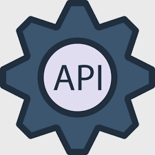
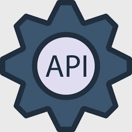

API Gateway
The TBFY API provides a flexible abstraction layer and a single-entry point that securely manages communication between TBFY clients and online tools via API.
APIs
The TBFY API provides a flexible abstraction layer and a single-entry point that securely manages communication between TBFY clients and online tools via API.
Web services
Storytelling tool is a client-side JavaScript framework designed for the purpose of supporting authors of data stories.